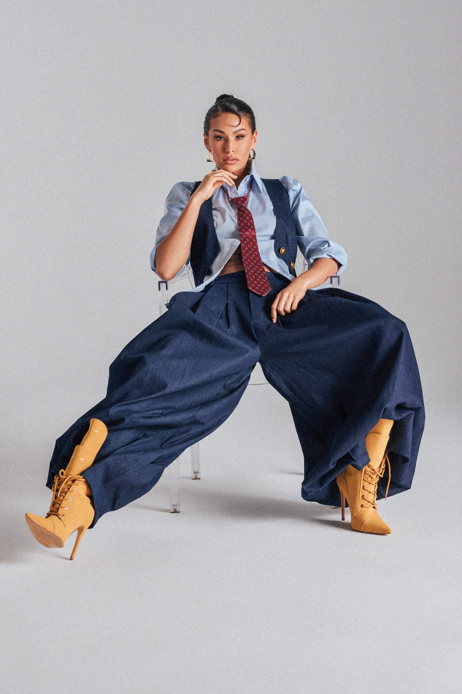
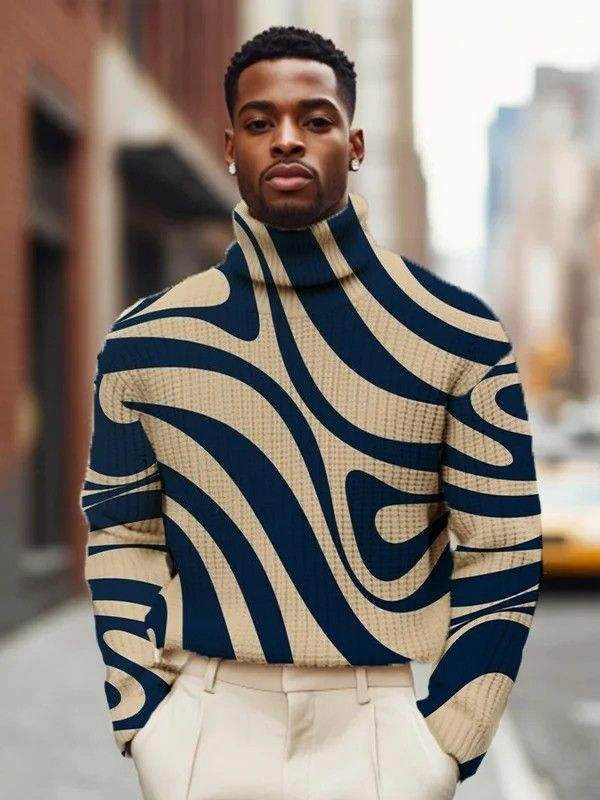
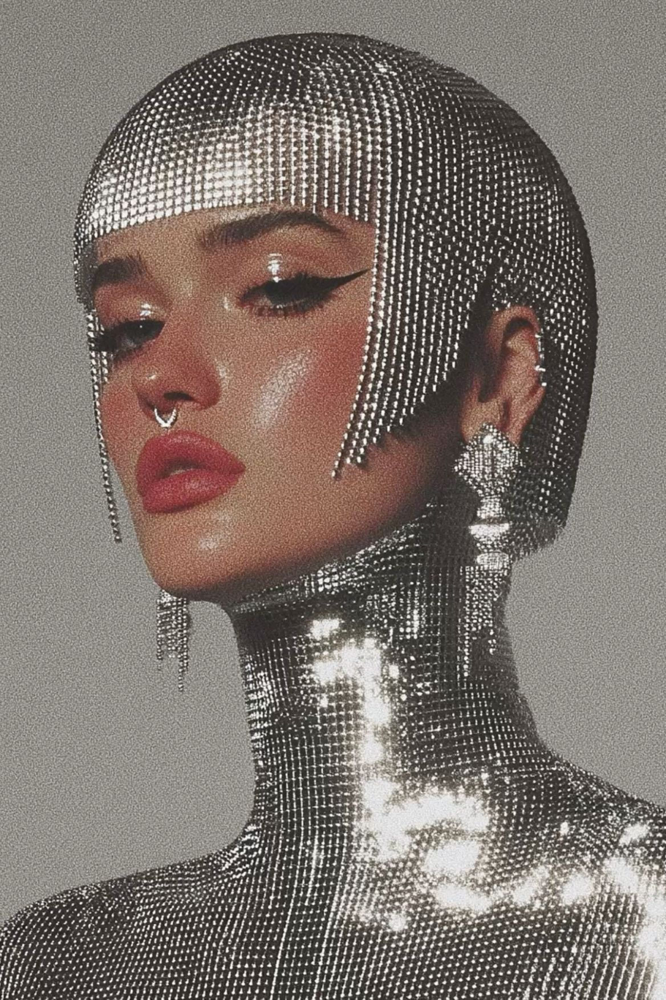
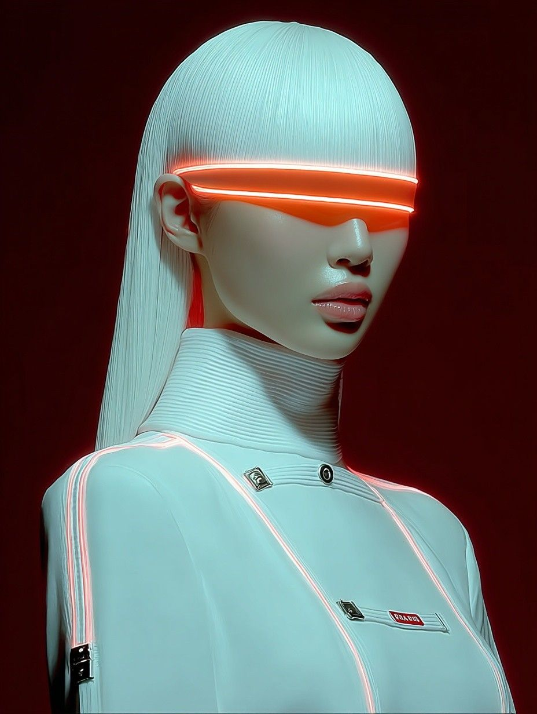
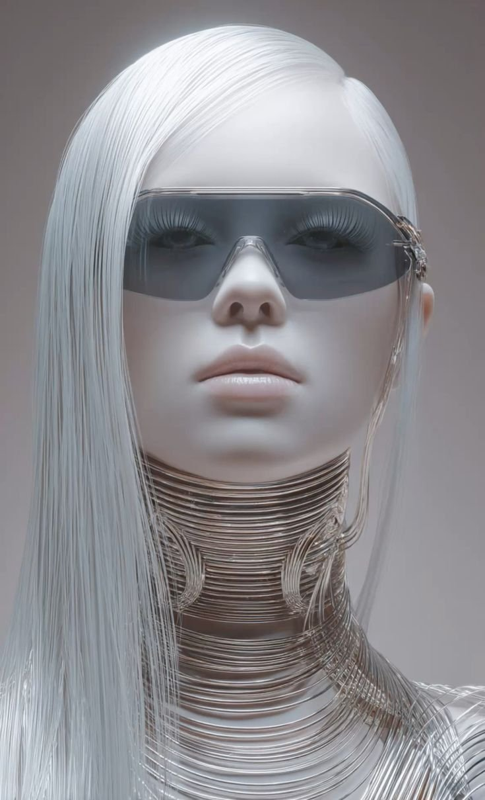
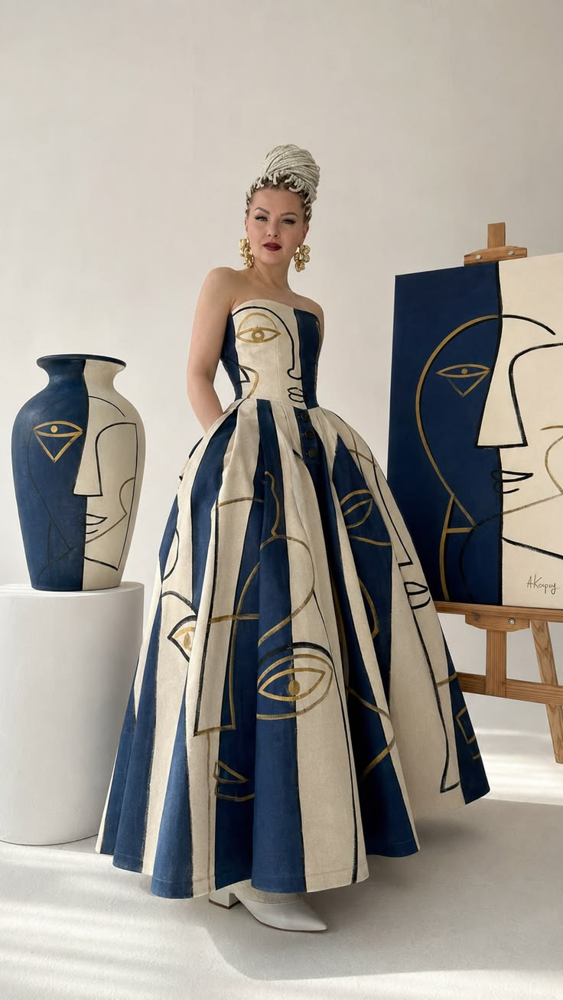

CSS Animations · Interactive
Gestures and layout.
Drag, throw, swipe, and hold. These primitives use a spring integrator rather than an easing curve, because a throw has to start at whatever velocity your pointer had — and the layout moves below aren't keyframed at all: the library measures a before and after and animates the difference.
Every card below responds to a real pointer — drag, swipe, or hold one.

Drag meGestures & physics
Thirteen preset names over four primitives — draggable, swipeable,
pressable, magnetic — sitting outside the lettered A–O catalog
sections. The drag family differs only in what happens on release: nothing (drag),
back to origin with varying spring stiffness (elastic-pull, rubber-band,
snap-back), or onward with momentum (drag-inertia, throwable).
Draggable · momentum — 2

Draggable · return springs — 3

Draggable · axis — 3


Swipeable — 2


Pressable — 1
Magnetic — 2
Layout & FLIP
Nine preset names, one technique: the library measures each child's box before a DOM
change, measures again after, and animates only the delta. Filtering is a class or
hidden change on the children — a layout change isn't expressible as
keyframes. These animate elements you control; accordion-height
animates height only, it doesn't own aria-expanded or keyboard handling.
flip-filter — 1
flip-reorder — 1
Click any card — it jumps to the front and the rest reflow around it.
flip-sort — 1
flip-shuffle — 1
grid-to-list — 1
masonry-reflow — 1
expand-to-modal — 1
Click a card to expand it in place; the rest of the grid reflows around it.
accordion-height & tab-indicator-slide — 2
draggable with return:true), different spring
stiffness. elastic-pull ships a soft return, rubber-band widens
the resistance before it lets go, and snap-back uses a stiff spring
(stiffness:260) that whips home fast.
swipeable and pressable only own a state channel —
they publish data-kui-swipe / data-kui-pressed attributes and
leave the visual response to ordinary CSS, same as the swipe badge and press outline on
the cards above.
MutationObserver on the container watching childList,
subtree, and the hidden attribute. Reordering or hiding
children fires it automatically — a bare CSS class change on the container (like
grid-to-list's view toggle) does not, so this page re-appends the children
after a class swap to give the observer something to notice.
Even columns, fixed aspect ratio — the entrance-matrix and filter demos above all use this.
Single column, image and caption side by side — what grid-to-list switches into.
Variable-height columns that pack tight — what masonry-reflow demonstrates above.
Programmatic API
The same registry, driven from JavaScript. anim.play() accepts a selector, an Element, or any iterable.